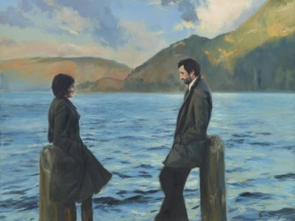

🔙
🌳 رواية ـ ماجدولين
.jpeg)
.jpeg)

نبذة عن الرواية
رواية ماجدولين أو تحت ظلال الزيزفون هي قصة أدبية رومانسية كلاسيكية، كتبها الأديب الفرنسي ألفونس كار وأعاد صياغتها بالعربية بأسلوب أدبي جميل مصطفى لطفي المنفلوطي.
تدور أحداثها حول شاب وفتاة يجمعهما حب صادق في بيئة ريفية شاعرية، لكن ظروف الحياة وتدخلات المجتمع تغيّر مسار هذا الحب. الرواية تتميز بوصفها العاطفي العميق للطبيعة والمشاعر الإنسانية
، وبأسلوب المنفلوطي الرقيق الذي يمزج بين الفصاحة والخيال.
رأيي الشخصي
الرواية رغم بساطه قصتها وتكرارها ، بس تأثرت فيها بسبب اسلوب كتابه المنفلوطي ، اسلوب تعبيره الادبي يتعدى بمستويات رويات كثيره حاليا، انسحرت بجمال الروايه وتعابيرها ، وكانت نهايه لاتنسى ، الروايه محزنه عامه ، وبتحزن عند انتهاءها أكثر ، وأشكر المنفلوطي لكتابته هذا الاسلوب الساحر الي من بعده بتحمس واكمل باقي روايات المنفلوطي.
الاقتباسات
"الحب قطرة غيثٍ صافية تنزل بالتربة الطيبة فتثمر الرحمة والشفقة والبر والمعروف، وبالتربة الخبيثة فتثمر الحقد والغضب والشر والانتقام."
"السعادة هي نتيجة نجاح المرء في التلاؤم والتكيف مع الظروف الواقعية التي تحيط به."
💬 تعليقات القراء